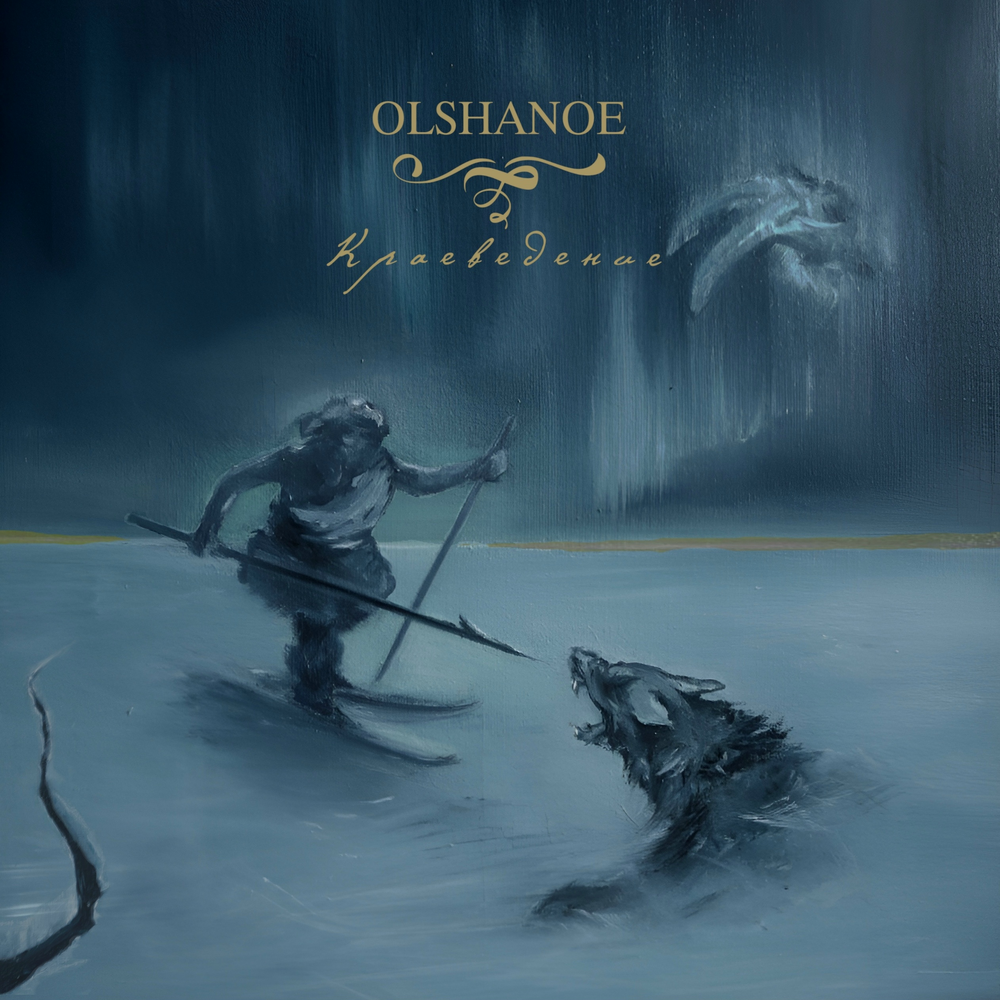
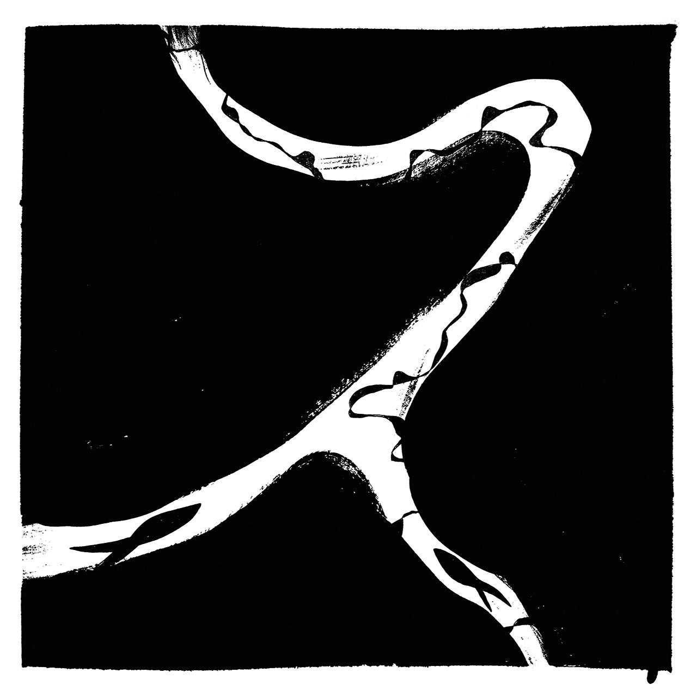

Russia
Обзоры релизов — 2

За тот небольшой промежуток времени, что существует Olshanoe, группа смогла сформировать собственный узнаваемый стиль, а их подход к делу благодаря фильму, перфомансу и акциям вышел далеко за рамки музыки.

Наконец-то смог добраться до полноценного прослушивания дебютного альбома рязанского проекта Ранова. Я чувствовал, что этому альбому нужно уделить чуточку больше внимания, нежели я это делаю с другими релизами.